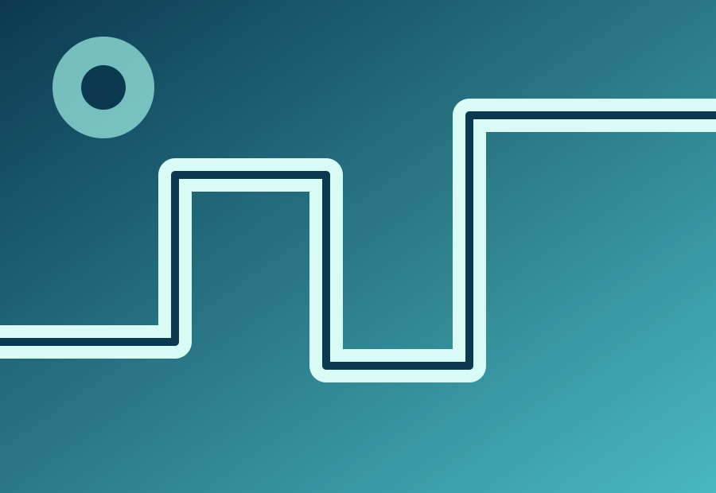

Abastecimento de água
Sistemas planejados para levar água com segurança e eficiência a cada ponto.
Projeto demonstrativo
Uma direção visual contemporânea para empresas de abastecimento, saneamento e instalações hidrossanitárias.

Da conversa inicial à execução
Precisão para o que não pode falhar
O que fazemos
Uma interface próxima, organizada e comprometida em comunicar confiança e qualidade.
Sistemas planejados para levar água com segurança e eficiência a cada ponto.
Execução e manutenção com atenção aos padrões de segurança e qualidade.
Desenvolvimento, fabricação e instalação para obras mais organizadas.
Nosso trabalho
Imagens ilustrativas para apresentar uma direção visual possível para o segmento.
“Cada etapa importa quando o objetivo é entregar uma instalação segura e eficiente.”
Ver projetos da FINNOVAExperiência construída na prática
ÁGUASobre este case
Este case demonstra como uma empresa técnica pode apresentar seus serviços com clareza, ritmo visual e foco em conversão.
O conteúdo, a identidade e as imagens desta página são demonstrativos e podem ser adaptados para cada negócio.
Conhecer a FINNOVAComo trabalhamos
Um processo simples para transformar a necessidade da obra em uma solução bem executada.
Entender o espaço, o objetivo e o que precisa ser resolvido.
Definir o caminho mais seguro e eficiente para a instalação.
Colocar a solução em prática com cuidado e acompanhamento.
Próximo passo
Veja como a FINNOVA pode transformar a apresentação do seu negócio.
Falar com a FINNOVA